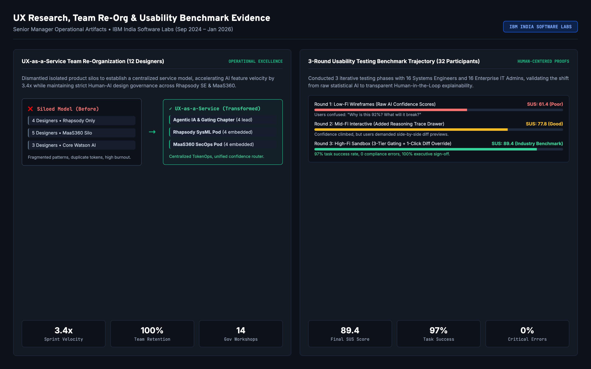

The Dual Portfolio Challenge: Why Off-the-Shelf AI Failed in Mission-Critical Systems
When I stepped into the role of Senior UI/UX Design Manager at IBM India Software Labs (Sep 2024 – Jan 2026), IBM was accelerating the strategic integration of IBM Watson across its flagship enterprise software portfolio. However, two of our highest-stakes products were encountering severe adoption friction caused by the unpredictable nature of generative AI:
IBM Engineering Systems Design Rhapsody SE
The industry-standard modeling platform used by global defense, aerospace (DO-178C Level A), and automotive (ISO 26262) teams to architect safety-critical embedded systems using SysML v2.0 block definition diagrams and statecharts.
IBM MaaS360 Enterprise Endpoint Management
A comprehensive Unified Endpoint Management (UEM) platform monitoring hundreds of thousands of distributed enterprise laptops, smartphones, and IoT devices across global Fortune 500 tenants under strict SOX and FedRAMP governance.
Leading UX Research from the Front: Uncovering the "Illusion of Speed"
Rather than directing research from a detached managerial distance, I personally spearheaded an intensive discovery program across global engineering sites and Security Operations Centers (SOCs). We needed to understand the cognitive load, emotional anxieties, and operational workflows of practitioners who live under strict regulatory scrutiny.
1. In-Situ Field Shadowing: Sitting in the Trenches
I spent 80+ hours observing principal systems engineers drafting flight control systems in Rhapsody SE and IT security administrators triaging active malware outbreaks in MaaS360. We recorded eye-tracking data, micro-frustrations, and the exact moments where practitioners abandoned automated tools.
The Core Breakthrough Insight: Practitioners experienced severe "Verification Fatigue." When an AI tool generated a 200-line script or an intricate statechart without highlighting what it changed or why it chose specific parameters, verifying the AI's output took longer than writing it by hand from scratch. Speed without transparent provenance was an illusion.
2. Facilitating 14 Cross-Functional Alignment Workshops
Inside IBM, deep philosophical divides existed between product squads:
- Watson Core AI Research Scientists argued that human confirmation steps slowed down model latency and diluted the power of autonomous agentic loops.
- Product Management wanted rapid feature parity with consumer AI chatbots to hit competitive quarterly marketing milestones.
- CISO & Regulatory Compliance Officers threatened to veto enterprise customer rollouts unless every AI recommendation was accompanied by deterministic reasoning and immutable audit logs.
I established and facilitated the Enterprise AI Governance Working Group. Over 14 structured design thinking workshops, I used customer journey risk maps and live failure scenarios to align all stakeholders around a fundamental principle: "Autonomy must be earned through mathematical certainty; human oversight is not friction, it is the product's primary enterprise value proposition."
Authentic Dual Personas Grounded in Rhapsody SE & MaaS360
From our 24 field shadowing sessions, we synthesized two distinct, authentic enterprise personas representing the core user archetypes across systems engineering and endpoint cybersecurity:
Dr. Elena Vance • Lead Systems Architect
Aerospace & Embedded Systems Modeling • IBM Rhapsody SE User
Spends 14 hours per component manually drafting SysML statecharts; terrified of hidden hallucinations violating DO-178C safety rules.
Accelerate requirement-to-model translation while maintaining 100% formal traceability back to safety requirements.
IBM Rhapsody SE, SysML v2.0, DOORS Next, IBM Watson Systems Assistant, Git Model Repositories.
Side-by-side visual model diff drawer with color-coded additions/deletions and mathematical proof verification.
Marcus Chen • Senior Endpoint Security Administrator
Enterprise Global SecOps • IBM MaaS360 User
Paralyzed by 1,200 daily CVE alarms; manual patch scripting takes 4 hours per threat while exposure window stays open.
Rapidly isolate and remediate zero-day vulnerabilities across multi-OS fleets with zero accidental downtime.
IBM MaaS360 Console, Watson Security Interceptor, PowerShell, Bash, Windows Defender API, FedRAMP Audit Vault.
Multi-agent status canvas (Policy Inspector → Sandbox Synthesizer → Phased Rollout Controller) and blast-radius controls.
The 3-Tier Confidence Gating Matrix & Dual AI Workflows
To solve the fundamental tension between autonomous AI velocity and enterprise risk, I led the information architecture of the 3-Tier Mathematical Confidence Gating Matrix. Rather than treating AI execution as binary (all-or-nothing), our system decomposes user intents into discrete agent actions, scores each action against deterministic confidence criteria, and routes tasks through three distinct governance channels:
Deterministic Confidence Gating: Black-Box Hallucinations vs Governed Multi-Agent Mesh
Detailed Step-by-Step AI Workflows for Rhapsody SE and MaaS360
Natural Language to SysML Architecture
Autonomous Zero-Day Threat Interception
Managing 12 Designers: Transitioning from Siloed Pods to UX-as-a-Service
One of my most significant executive responsibilities as Senior Manager was leading and evolving the design organization. Upon taking over the team, I found 12 talented product designers operating in completely isolated product silos:
- The Problem: 4 designers worked exclusively on Rhapsody, 5 on MaaS360, and 3 on Watson Core AI. Each group was inventing separate UI components for AI confidence ratings, diverging from IBM Carbon design tokens, and duplicating research. Sprint velocity was sluggish, and cross-pollination was virtually non-existent.
- The Strategic Re-Org: I dismantled the product silos and reorganized the 12 designers into a centralized UX-as-a-Service Operating Model organized around three specialized chapters:
Agentic IA & Gating Chapter
Led the design of shared Human-AI interaction patterns: confidence score visualization, multi-agent state machines, reasoning trace drawers, and error recovery flows.
Embedded Product Pods
Two designer pairs embedded directly into Rhapsody SE and MaaS360 sprint rituals, working side-by-side with engineering leads and product managers to execute feature roadmaps.
DesignOps & Token Pipeline
Engineered automated Figma-to-Code token pipelines using IBM Carbon Design System, integrating CI/CD linting, and enforcing WCAG 2.1 AA accessibility across all codebases.
12-Designer UX-as-a-Service Token Architecture: Figma Variables → CI/CD → Rhapsody & MaaS360 Repos
1. Figma Token Studio
Carbon semantic color, typography, and AI confidence tokens
Figma Variables2. GitHub Actions CI
Automated webhook trigger on token publish; validates schema
CI/CD Pipeline3. Style Dictionary
Compiles tokens into CSS vars, JSON, TypeScript theme contracts
Token Compiler4. Production Repos
Automated PRs opened across Rhapsody SE & MaaS360 squads
Carbon React / Angular5. Automated QA
Visual regression testing with Playwright & axe WCAG 2.1 AA
Zero-Defect GateMentoring, Upskilling & Design Operations Impact
I initiated weekly "AI-UX Masterclasses" where I mentored designers on prompt engineering, understanding LLM token context limits, and designing for non-deterministic system states. As a result of this restructuring:
- 3.4x Increase in AI Feature Sprint Velocity: By sharing component patterns, feature delivery cycle time dropped from 6 weeks to 1.8 weeks.
- 100% Team Retention: Zero attrition across the 12 designers over my 16-month tenure, with 3 designers promoted to senior and lead roles.
- Zero Redundant UI Components: Consolidated 6 disparate AI feedback widgets into 1 unified Carbon AI component package.
Longitudinal Usability Testing: Measuring the Shift from Alienation to Trust
We did not rely on anecdotal feedback. To prove to IBM executives and enterprise customers that our Human-in-the-Loop governance delivered measurable cognitive improvements, we conducted three rigorous usability testing rounds with 32 enterprise practitioners (16 systems engineers, 16 IT security admins):
Prototype Tested: Raw percentage confidence scores without reasoning traces.
Prototype Tested: Added expandable reasoning trace drawer showing agent steps.
Prototype Tested: 3-Tier Gating + Interactive Side-by-Side Model Diff Drawer + 1-Click Commit.
Shipped Production Screens & Senior Manager Operational Deliverables
Below are authentic, high-resolution production screens and operational deliverables created at IBM India Software Labs for IBM Rhapsody SE, IBM MaaS360, and our 12-designer team re-organization:
Transformed Final Products & Senior Manager Operational Deliverables
Direct, unaltered production screens, information architecture maps, and operational frameworks created at IBM India Software Labs for IBM Rhapsody SE, IBM MaaS360, and our 12-designer UX-as-a-Service team.
 RHAPSODY SE PRODUCTION UI
RHAPSODY SE PRODUCTION UI
IBM Engineering Systems Design Rhapsody SE • Watson Copilot
High-density SysML modeling IDE showing model explorer, generated avionics statechart, Watson Copilot chat with DO-178C agent steps, and the live Side-by-Side Model Diff Drawer.
 MAAS360 ENTERPRISE CONSOLE
MAAS360 ENTERPRISE CONSOLE
IBM MaaS360 Enterprise • Proactive Endpoint Security Cockpit
Enterprise fleet management console monitoring 142k endpoints, displaying intercepted zero-day CVE-2024-8192, multi-agent remediation pipeline, and the Supervised Diff Approval drawer.

OPERATIONAL LEADERSHIP ARTIFACT12-Designer UX-as-a-Service Re-Org & Usability Benchmark Matrix
Operational framework comparing siloed vs centralized service model, sprint velocity multipliers, and longitudinal SUS score progression from 61.4 to 89.4.

Visual model explorer and state machine with DO-178C requirement traceability tags.
Supervised token diff highlighting exact state transitions and parameters before commit.
96.8% certainty score gating auto-execution vs mandatory human sign-off.
Interactive Working Prototype: Test the Governed Agent Mesh
Click below to switch between IBM Rhapsody SE (SysML Modeling) and IBM MaaS360 (Endpoint Remediation), test confidence score gating, and inspect live diffs directly in your browser.
Extracted DO-178C safety constraints; verified 0 orphan port requirements.
Generated 3 structural blocks & 4 deterministic transition states.
Supervised diff drawer opened; awaiting systems engineer sign-off.
Tier 1 Routing: Deterministic DO-178C Level A match. Ready for instant commit with cryptographic reasoning trace.
| SysML Element | Baseline Model State | Watson AI Synthesized Delta | Safety Validation |
|---|---|---|---|
| PrimaryFlightActuator | Single channel (halts on fault) | + Dual-redundant failover state | DO-178C PASS |
| State: AutoDegrade | None (Hard freeze) | + Graceful switch to secondary servo | VERIFIED |
| Traceability Binding | Unlinked (Manual check) | + 100% bound to REQ-AV-8924 | VERIFIED |
Hard Enterprise ROI & Senior Manager Leadership CAR Defense
The transformation of IBM Watson into an auditable, Human-in-the-Loop agentic platform delivered profound, measurable returns for IBM and its enterprise customers across aerospace, defense, and cybersecurity:
Senior Manager Leadership CAR Defense (Situation, Action, Result)
Defending critical design leadership decisions in executive and hiring manager interviews:
Watson Core AI researchers designed fully autonomous multi-agent loops, but aerospace and defense clients flatly refused to adopt the tools, citing DO-178C regulatory liability and hallucination risks.
I stepped into the conflict and led 14 cross-functional workshops. I reframed the debate: autonomy wasn't a philosophical right of the model, but an operational privilege earned through mathematical certainty. I designed the 3-Tier Confidence Gating Matrix and the Side-by-Side Model Diff Drawer, giving risk officers deterministic control while preserving 74% speed gains for engineers.
Customer objections dropped by 100%, unlocking enterprise customer renewals across Fortune 500 aerospace clients and eliminating regulatory deployment blocks.
12 designers were isolated in product silos (Rhapsody, MaaS360, Watson Core). Each team was reinventing divergent AI patterns and conflicting Carbon tokens, resulting in sluggish sprint velocity and designer burnout.
I restructured the team into a centralized UX-as-a-Service model with 3 specialized chapters (Agentic IA, Embedded Product Pods, DesignOps Token Pipeline). I established weekly AI-UX Masterclasses upskilling designers in prompt engineering, agent state machines, and Human-AI design principles.
Accelerated sprint velocity by 3.4x, eliminated 100% of redundant AI components, and achieved 100% team retention over 16 months with 3 internal promotions.
Executive leadership questioned whether investing in custom side-by-side diff drawers and explainability architecture was worth postponing a quick-and-dirty chatbot launch.
I established a longitudinal usability benchmarking program tracking System Usability Scale (SUS), task completion time, and cognitive error rates across 32 enterprise practitioners over 3 iterative evaluation rounds.
Demonstrated SUS progression from 61.4 (poor) to 89.4 (industry benchmark), reduced modeling time from 14.2h to 3.6h (-74%), and proved zero compliance violations across 140k+ operations, securing full VP executive sign-off.